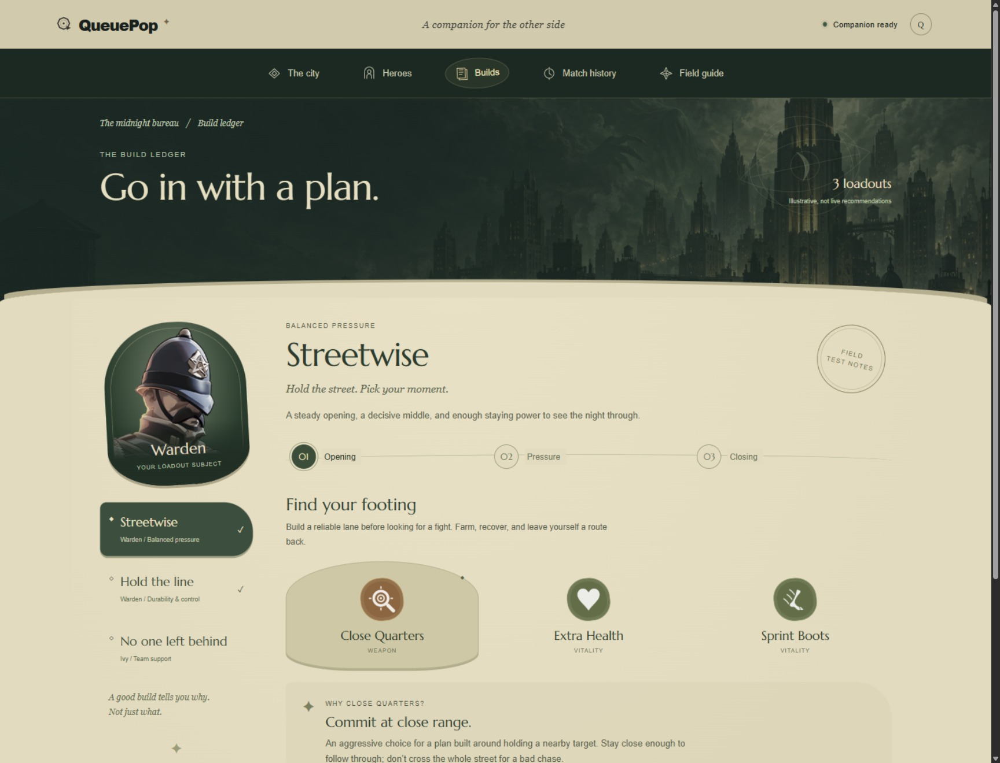
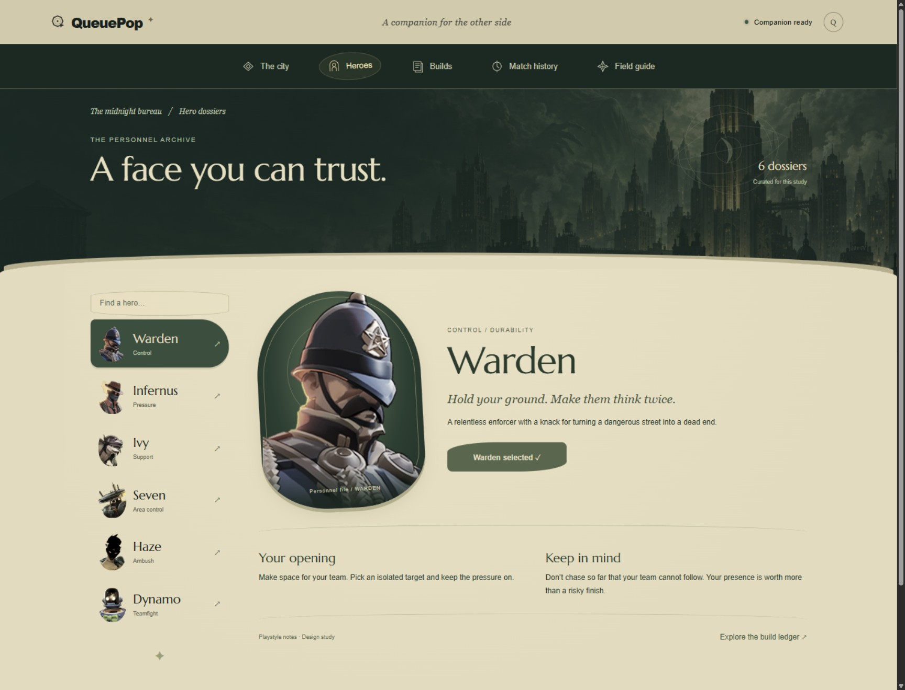
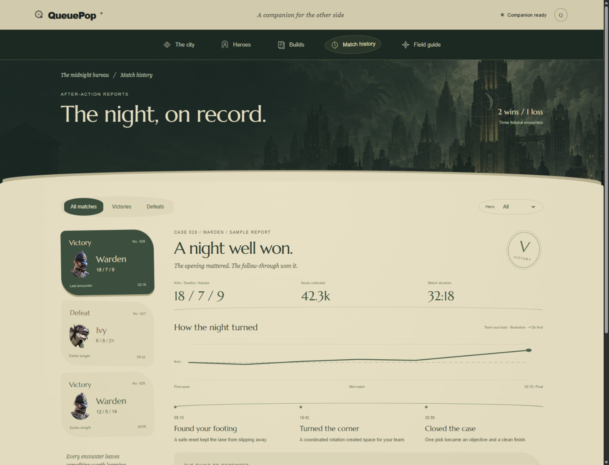
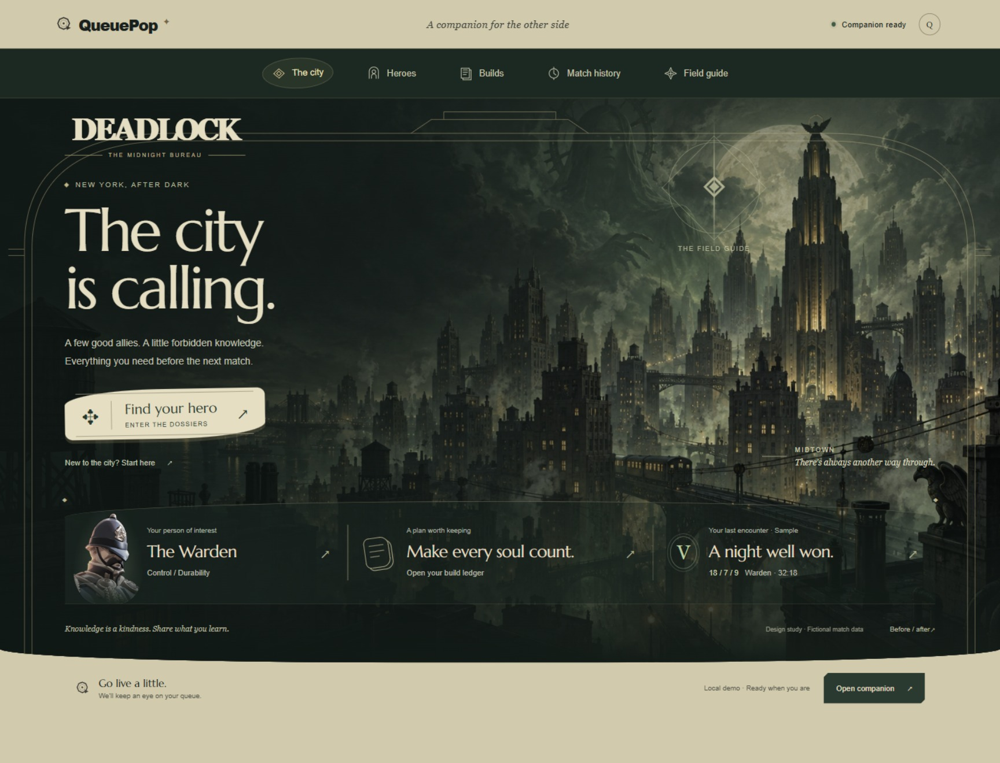

Dedicated pages replace the popup archive. The city stays in view, navigation stays within reach, and curved signage, cameo portraits, and worn paper soften the bureau's old straight edges.
Before · The popup archive
The previous build ledger sat inside a framed modal over the city.
Now · A page of its own
A bookmarkable build page with city-backed typography, a curved paper edge, soft item silhouettes, and normal page scrolling.

People of the city
The hero archive now has room for larger portraits and softer cameo frames.

The night, on record
Match reports follow the same page structure. Encounter data remains fictional.

The city entrance
Curved architectural lines and signage carry the same shapes back to the homepage.

The original V2 reference
The original supplied screenshot.The first cinematic design pass.